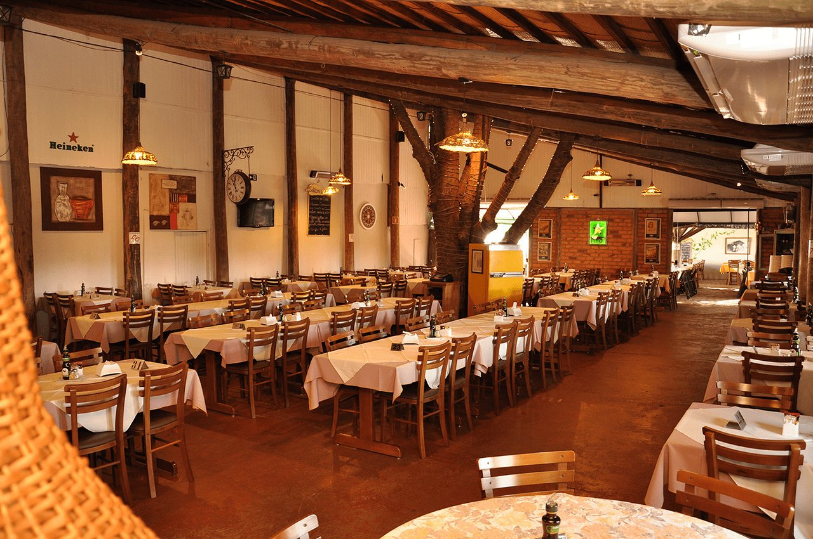

O que eu mais gosto em Santa Barbara D' Oeste
Comer no Rancho da costela!
Um Restaurante tipico de fazenda. Além da consagrada costela "Mais Caminhos", ofertam deliciosos pratos, sobremesas, café premium e chopp de qualidade. Tudo isso em um ambiente campestre, sereno e acolhedor. Em atividade desde 1996.
Conheça mais sobre visitando o site.
Fazer um piquenique no Parque dos Ipês

Tanto no fim de tarde quanto aos fins de semana o Parque dos Ipês é sempre um bom local para passar o tempo com a familia.
Descubra mais sobre o Parque dos Ipês no site.
Caminhar no caminho dos Flamboyants

Se exercitar é sempre algo recomendável, ainda mais se for em um local agradável e perto da natureza.
Veja no mapa onde fica esse local.
E existem muitos outros lugares interessantes na cidade....
- O bar dona Beleza.
- Cemiterio dos americanos.
- A igreja matyriz
- O teatro municipal Manoel Lyra.
- O parque dos Jacarandás
Um guia para você turistar em SBO! 🙈